The table below lists the privileges.
Tip: You can set up “generic” users, and duplicate these, so (for example) users in the same department have the same privileges.
Note: If you are converting from MoneyWorks 4, you will need to set up your privileges again.
provide an additional layer of protection to general ledger accounts and to any
transactions that use them. Thus a user with a security level of:
Privilege Notes
Administration
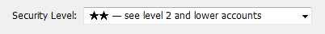
cannot see or access accounts with a higher security level (more stars), such as:
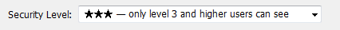
Users and Security (Administrator)
Period Management
Auto Open Period
Document Preferences
Signing and Using
This gives access to the privileges setup, and hence should be turned off for all users except administrator.
User can open a period while entering a transaction by entering a date beyond the current period.
Users without this privilege can only print forms and reports that are signed to them.
Unsigned Forms &
Reports Revert/
Rollback
Remote Save This privilege controls ability to Save on Datacentre (i.e. commit changes). Diagnostics
Debtors
Enter Invoices
Receipt Invoices
Payments History
Statements
Auto Allocations
This disables the ability to define auto-allocations--they can still be used.
and Ageing Cash
Backup Controls the ability to save a backup. Both this and Remote Save are required
for backup to client on Datacentre.
Reminders This controls access to creating reminders; not seeing them. The ability to see Overdue debtors/creditors auto messages is controlled by the “Debtors” and “Creditors” privileges.
Enter Payments
Enter Receipts Banking
Bank
Execute External Scripts
Importing Exporting
Company Details
Log File
Customise List Views
Customise Validation Lists
Purchases Enter Orders
Process Orders Creditors
Enter Invoice Pay Invoices
Payments History
Change Bank Account
Sales
Enter Orders Process Orders
Process Partial Orders
Turn this on for users who need any COM/AE interaction, such as communicating with FileMaker or Excel, or starting Scripts in the Command menu. Note that external scripts can export any information in the database, and hence for maximum security, this privilege should be denied unless it is really needed.
Controls the capability of changing the electronic bank account details (for creditor payments).
Reconciliation
Change Opening Balance on Bank Rec
Accept Unbalanced Bank Rec
Clear Bank Recs
See Balances in Bank Popup
Load Bank Statement
Edit Currencies General Ledger
View Accounts
Create Accounts
Modify Accounts
Delete Accounts
Budgets & Balances
Enter Journal Adjustments
GST/VAT/Tax Report/
Turning this off suppressing the bank balance display in the bank pop-up menu
See Margins Turn this off if you don't want the user to see product margins when entering transactions.
Finalisation
Account
Enquiry
Change Tax Table
Jobs
View Jobs
Create Jobs
Modify Jobs
Delete Jobs Enter Job
Sheet Items
Transactions/ Orders
Print Unposted Invoices
Make Changes to Posted Transactions
Use `Replace` Command
Unlimited Write- offs
If this is off, the amount that the user can write-off when processing an invoice is limited to the Limit on the fly write-off amount specified in the
See All Job Sheet Items
Bill Jobs
Use Completed Jobs
If this is off, the user will only be able to see the job sheet entries that they themselves have made.
Override Pricing and Terms
Edit Off-Ledger values
Terms panel of the Document Preferences.
If this is off, the user will not be able to override discounts and terms when entering transactions (discounts on imported transactions can still be over- ridden).
Products
View Products
Create Products
Detail Lines List If this is off, the user will not be able to access the Detail Line list in the Show menu.
Select Filters If this is off, the user will not be able to change filters, and thus will be constrained by whatever filters are in operation when the user was set up.
Modify Products
Delete
User Privilege 1...6
These are for your own use, and can be used to control access to reports and scripts using the Allowed() function.
Products Build Products
Stock Journals Stock Enquiry Sales Enquiry
Purchases Enquiry
Names
View Names Create Names Modify Names Delete Names Sales Enquiry
Purchases Enquiry
Adjustments
Elective Posting If this is Off, the user will not be able to post transactions (except those automatically posted, such as adjustments).
If you are connected to Datacentre, you can copy user settings (customised columns, filter settings, custom validations, preferred forms, default accounts, tab order, etc) from one user to another.
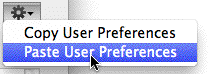
To copy these preferencess from user A to user B:
Make sure user B is logged out
In Users & Security, double-click user A
Click the gear button and choose Copy User Preferences
Close the dialog for user A
Expression Evaluation
Delete Unposted
If this is off, the user cannot enter an expression (i.e. something starting with
=) into a MoneyWorks field, or customise a list using a calculated value.
Sharing your Document over a Network
Click OK
All of the settings for that user will be replaced. The user will get the settings the next time they log in.
If you want simultaneous access to your MoneyWorks file by more than one user, you will need to install MoneyWorks Datacentre. MoneyWorks Datacentre runs in the background on a server or workstation and provides high- performance network access to one or more MoneyWorks databases.
MoneyWorks Datacentre allows simultaneous access to an accounts database for multiple users. This actually means two different things:
Multiple users can work on the same set of accounts simultaneously, either over a local area network, or remotely across the internet provided their router is configured correctly.
You can set up multiple user names, each with their own password and privileges. Privileges control what data and procedures an individual user can access.
You can use the multiple user name and password functionality even if you are not sharing the data across a network. Likewise you can share data across a network without employing the enhanced security of multiple user names and passwords. Normally, however, the two go hand in hand, for obvious reasons.
MoneyWorks Datacentre This is the serving technology that enables fast, secure networking. There are two versions: a “single company” version, that allows a single company file to be shared, or a “multi company” version, that allows a number of company files to be shared simultaneously to different users.
A designated “host” computer This is the machine onto which the Datacentre software will be installed. It can be either a server or a desktop machine running recent versions of Windows or Mac OS X. It does not need to be a dedicated computer—Datacentre is invisible and runs in the background. If you want 24/7 access, then the computer will need to be running all the time.
Licenses In order for users on different computers to access the shared document, each of those users will require a MoneyWorks license. This can be either a full MoneyWorks Gold license, or a server-based concurrent license. If you do not have the requisite number of licenses (i.e. one per concurrent user), you will first need to contact your MoneyWorks reseller or visit the Cognito website to obtain the necessary licenses. Note that you only need to have licenses for the maximum number of users at any one time.
A network You will need to have your computers networked. We strongly recommend that the server computer has a wired connection to your network switch.
You don’t need a domain controller, a dns server, a directory server or a file server MoneyWorks uses Bonjour™ network service discovery to make it easy to connect to a MoneyWorks server on a local area network.
MoneyWorks Datacentre does not require dedicated server hardware; it does not require a server OS — plain macOS or Windows (64-bit) is fine; it has no other software requirements.
When you are sharing a document, you never open it directly (this is the job of the Datacentre server), but always Connect to it. This is true even if you are on the “host” computer.
The first time you attempt to access a document on a Datacentre server you will need to do it by connecting, as described below. The connection will thereafter be remembered and displayed in the Recent Documents list on the MoneyWorks Welcome screen—provided you have opted to have your user and password stored in your keychain/vault, you can simply double-click to reconnect.
Note that you can mix Macintosh and Windows clients and servers on the same network. It makes no difference if you are using a Mac and the server machine is running Windows, or vice versa.
To connect to a shared document
The Log In window will open. How you use this depends on where the MoneyWorks file you wish to access is located, and is determined by the Connect Using pop-up menu at the top of the window, as shown below:
If your server is on the same local network: choose Local Network Browser.
This is discussed in Connecting to the local network.
If your server is on a different network: (for example, you are accessing it remotely over the internet), choose Manual Using IP Address. You might also need to use this if you are on the same network but Bonjour browsing has been blocked/disabled on your computer or the server by a network
administrator. See Connecting to a document on another network for further details.
If you are using the MoneyWorks Now cloud service: choose MoneyWorks Now. See Connecting to MoneyWorks Now.
Setting the Connect Using pop-up menu to Local Network Browser will display a list of the MoneyWorks servers or documents available on the local network.
The list will show the MoneyWorks document hosted by a single-company server, or the server name(s) of multi-company server(s).
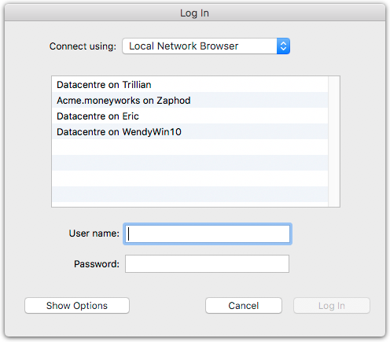
User and Password, and click the Log in button
This will be the situation if you have a single company server. The file should open for you when you click Log in.
Generally there will only be one Server available, but some sites run multiple Datacentre servers.
Usually no user name or password is required for the initial connection and document listing for a local Datacentre Server (the username and password fields will be disabled), but if the username and password fields are enabled, you will need to supply these.
Click Log In
The list of accounts documents on the selected server will be displayed.
If the document has users/passwords, you will need to supply your user name and password for this document.
Click the Log in button
You will be connected to the MoneyWorks document.
Setting the Connect Using pop-up menu to Manual using IP address will display the following:
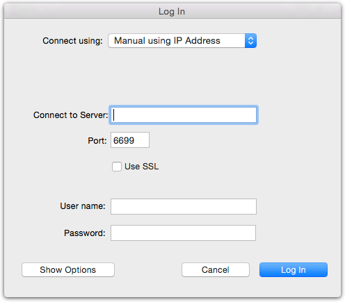
If you want to connect to a MoneyWorks server running on another network or at another location, you will not see the server in the Local Network Browser (Bonjour only looks on the local network, and some WIndows networks may have Bonjour browsing blocked by overzealous network admins).
This may be an IP address (four numbers separated by dots e.g. 123.456.78.9), a local computer name (e.g. Accounts-Server), or a fully- qualified domain name (cloudserver.hostingprovider.com).
Normally you leave this unchanged.
Note: if you connect using SSL with an IP address instead of a server name, the veracity of the security certificate will not be checked (but the connection will still be encrypted). If you connect with a server name, the server name must match the security certificate of the server.
By default, Datacentre servers are not password protected, so you would normally just leave these blank.
Click Log In
A list of available MoneyWorks documents will be displayed.
If you provided a username/password in step 3, you will only see the documents relevant to those credentials.
Enter your user name and password for the document
Click Log in
The document will open.
MoneyWorks Now is a distributed cloud service that provides MoneyWorks hosting in multiple locations worldwide, and also provides a single sign-on to access accounts for multiple companies so that you don't need to remember usernames and logins for all of them (if you are an accountant, you may have logins to many companies on MoneyWorks Now).
Setting the Connect Using pop-up menu to MoneyWorks Now will display the following:
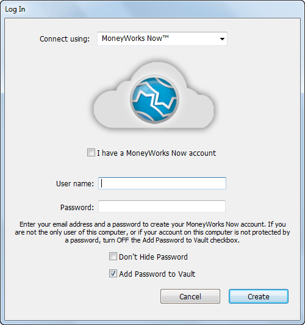
Ensure that the I have a MoneyWorks Now account check box is ticked, and enter your MoneyWorks Now user name (your email address) and password, and click Log in. Double-click the file you wish to access from the list presented in the next screen and it will open for you.
Enter your email address as the user name for the account you will create and your desired password and click Create. You will receive an email which you need to action to complete the account creation. Having done this, the administrator of the MoneyWorks document will be able to grant access to you, after which you will be able to connect to the document as described above. Note that the password must be at least nine characters long, and should be one that you are not going to forget (The MoneyWorks Now password is used to secure your access to all MoneyWorks Now documents that you have access to. Forgetting the password will require document admins to regrant access).
Important: By default, your password will be stored in the Keychain/Vault of the computer that you create the account on. If it is not your computer, deselect the Add Password to Keychain/Vault checkbox.
If your network is set up correctly, things should “just work”. However issues may arise when people tinker with firewall or network settings. Often if a computer is replaced by a new one, the settings on the new computer might be different.
The server refused the connection: Your version of MoneyWorks Gold is too new for this server. The server should be updated. Your client version of MoneyWorks has been updated and no longer works with the server version. You need to update the Datacentre server software.
The server closed the connection: Connection closed by remote host: The most likely cause is that the SSL settings connection settings are incorrect. Toggle the SSL checkbox and try again.
The server refused the connection: Incorrect password for Datacentre user: The Datacentre is password protected and you have provided an incorrect username and/or password. See your system administrator to get a correct password.
correct, that there is a Datacentre running on the computer at that address, and that there is not a firewall blocking access.
When you are logged in as a client, you log out using the Disconnect command rather than Close.
You will be disconnected from the server.
Or you can just Quit/Exit MoneyWorks.
If you sleep your computer while connected (by closing your laptop lid, for example), MoneyWorks will try to log you out before the computer goes to sleep. If this fails, it will take 5 minutes or more for the server to notice that you have gone away, during which you'll still be consuming a login to the server. It is best to avoid sleeping your computer while connected.
If password protection is turned on, any user who has Administrator privileges can use the Users & Security command to see who is logged in. This can be done from any client.
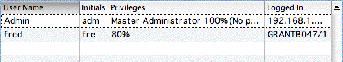
The user list in Users & Security shows the machine name or IP address of any computers that are connected. The example above shows that two people are logged in—User Admin from a computer at IP address 192.168.1.14 and user Fred from a computer called GRANTB047/1.
When logged in to a shared document, an administrator can send a short message to all other users who are currently logged in to that document.
Choose File>Users & Security
The Password Control window will open.
The Broadcast Message window will open.
Other MoneyWorks users currently connected to the document will have the message displayed as an alert.
You can create or modify reports and forms on your local computer, and, once they are completed, upload them to the Datacentre server. Other users will then receive the modified forms/reports the next time they connect. You can upload either a single report or form, or the entire custom plug-ins folder.
To upload:
Click the Signing button at the bottom left of the Password Control
Note that users who do not have the Signing privilege will need the reports and forms to be signed for their use. See Protecting Reports and Forms by Signing
Click the Upload tab in the Signing Dialog box
If uploading a single report or form (e.g. one you have just signed), select it in the list, and click the Upload One button
Click Upload All to upload the entire Custom Plug-ins folder
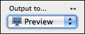
Server-Side Reporting on DatacentreIf the network latency is high (i.e. higher than a wired network), most reports will attempt to run on the server instead of the client when using Datacentre1. In general this
When you are the only user and commence an operation that requires Single- user mode, the following coachtip will be displayed to warn you:
will be much faster because it saves a great many database
requests from having to run over the network.
When a report is running on the server the following progress window is displayed. Click Cancel to safely stop the report preparation.
A double-arrow is displayed above the Output pop-up menu if the report is going to be prepared on the server instead of the client.
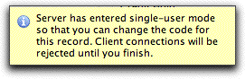
While you are in single-user mode, other users will not be able to connect. You should therefore complete the operation as quickly as possible—in particular you should not wander off for morning tea or lunch half way through, as this will lock other users out, possibly resulting in some unpleasantness.While the database is locked in single-user mode, you will get a warning every 15 seconds or so. This is intended to be moderately annoying.
The following can only be done when there is only one user connected.
Opening a New Period: You cannot open, close or lock periods if there are other
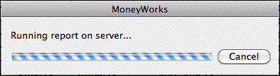
What’s different when you are SharingA multi-user database management system has to do rather a lot of work behind the scenes to maintain the integrity of the database in the face of multiple users all trying to change things at once. Fortunately, you don’t need to worry about this as Datacentre will do all the hard work without any guidance from you. You might, however, see the effects of this when MoneyWorks won’t let you do something that always would have been allowed if you were the only user.
Indeed for some operations that involve extensive updates to the MoneyWorks database, you must be the only connected user, and other users will not be able to connect until the operation is complete—this is referred to as being in
“single-user mode”.
users connected. If you are the only user connected, choosing Command>Open/Close Period will force the database into single-user mode for as long as the Period Management window is open.
Provided you have the Auto-open new period when opening file Startup preference turned on, and it is not the start of a new financial year, MoneyWorks will automatically open a new period (if required) the first time any user connects.
Changing “code” fields: Changing the code in a Product, Account, Name, Job or other master records can be done from any (authorised) user, provided there are no other users connected. This is because a change to any code may also involve modifying thousands of other records in the database, and the process might fail if another user is modifying one of those records.
In this situation when you double-click a record, the code field is disabled; if you click on it, the following coach tip is displayed
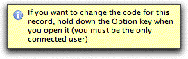
To alter the code field you must hold down the Option key (Mac) or the Ctrl key (Windows) and when you click the toolbar Modify button or double- click the record, the server will enter single-user mode allow you to alter the code field. A coach-tip is displayed to this effect.
Other users will not be able to connect until you have closed the record (using OK, Next, Previous or Cancel).
Deleting Accounts, Names, Jobs etc These records cannot be deleted in multi- user mode as it may invoke a major database update. However if only you are logged in, it will temporarily enter single user mode to do this.
Changing Account Types: The type of an account cannot be changed in multi- user mode. Likewise departmentalisation of accounts etc.
When more than one user is using MoneyWorks, their actions may affect what you are trying to do. In particular:
Only one user can modify a given record at a time. It does not make sense for more than one user to make changes to the same record at the same time. If you try, you will see something like this:
The first person who opens a particular record or starts an operation that may require a record to be changed will automatically and invisibly obtain a server lock on that record, preventing anyone else from make changes to it. If this were not the case, the first user’s changes might get obliterated by another user, compromising the database integrity. The server lock is automatically released when the first user is finished with the record.
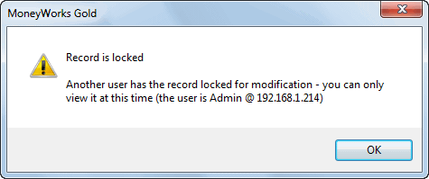
You can’t delete any record (even an unposted transaction) if another user is looking at it. The definition of “looking at” in this case is actually rather technical (for example, the record might be in another user’s list view), so we won’t bore you with it. Suffice to say, if you try to delete a record and MoneyWorks tells you it is locked, just try again later or ask other users to log out or close list windows.If you are running a report, and someone else posts a transaction, the report will offer to abort. Why? Because the ledger balances have just changed, so the report may not balance—reports need to run to completion without critical ledger data changing.